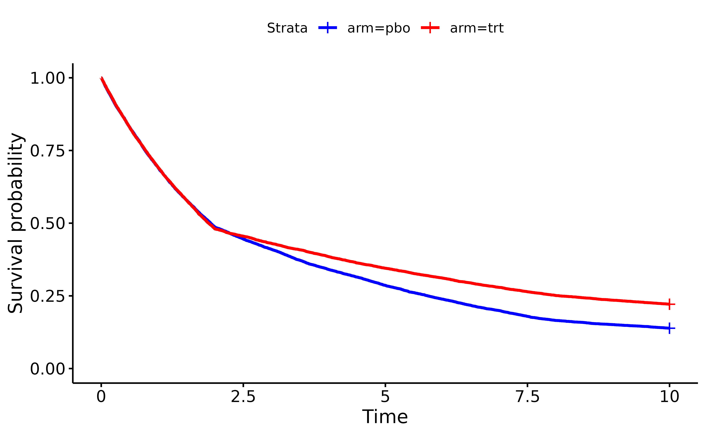

Define Time-to-Event Endpoints in Clinical Trials
Source:vignettes/defineTimeToEventEndpoints.Rmd
defineTimeToEventEndpoints.RmdThe first step in simulating a randomized clinical trial using
TrialSimulator is to define one or more endpoints for each
treatment arm. This vignette demonstrates how to use the following key
functions to define time-to-event endpoints. For non-time-to-event
endpoints, please refer to the separate vignette Define Non-Time-to-Event
Endpoints in Clinical Trials.
-
endpoint: Creates one or more endpoints -
test_generator: Generates an example dataset from anEndpointsobject
Typically, endpoints follow the same distribution family across arms
but with different parameters. Distribution parameters are specified
through the ... arguments in endpoint.
However, please note that endpoint offers the flexibility
to specify different distribution families across arms for
endpoints.
Note that the function test_generator is for helping
users understanding how TrialSimulator works. In formal
simulation, we do not need to call this function.
For the sake of completeness, in this vignette, we also demonstrates how to define an arm with the created endpoints by using the following key functions:
-
arm: Creates one or more arms -
add_endpoints: Add one or more endpoints into an arm
Define a univariate endpoint with random number generators from
stats
To define a time-to-event endpoint such as progression-free survival
(PFS) following an exponential distribution, we need to
specify its name and type. This specification
is crucial because TrialSimulator ensures all arms have the
same set of endpoints and manages endpoint data based on
type. For example, endpoints of type "tte"
(time-to-event) automatically receive an additional column
(name)_event to indicate censoring status.
Arguments for the generator function (in this case,
rate) are passed through .... We can verify
that the generator works as expected by requesting an example
dataset:
test_set <- pfs_pbo$test_generator(n = 1e5)
head(test_set)
#> PFS PFS_event
#> 1 6.5316820 1
#> 2 0.1490485 1
#> 3 3.6793035 1
#> 4 0.1933984 1
#> 5 51.7238773 1
#> 6 10.1631791 1
median(test_set$PFS) ## should be close to 5.6
#> [1] 5.592334Note that data returned by test_generator is only for
validation purposes. During actual trial simulation,
TrialSimulator determines when to call
generator from which how many samples to draw. To request
access of a data locked at a milestone, we can use the member function
get_locked_data of a Trials object which will
be introduced in the vignette An Example
of Simulating a Trial with Adaptive Design.
We can get a summary report by printing an endpoint
object
pfs_pboSimilarly, we can define a PFS endpoint for the
treatment arm:
pfs_trt <- endpoint(name = 'PFS', type = 'tte',
generator = rexp, rate = log(2)/6.4)
median(pfs_trt$test_generator(n = 1e5)$PFS) ## should be close to 6.4
#> [1] 6.444728Now we can define the placebo and treatment arms by adding the
PFS endpoints:
pbo <- arm(name = 'placebo')
pbo$add_endpoints(pfs_pbo)
trt <- arm(name = 'treatment')
trt$add_endpoints(pfs_trt)We will cover how to create a trial object based on arms
pbo and trt in another vignette.
Define a univariate endpoint with custom random number generators
endpoints accepts custom random number generators for
univariate random variables, as long as the generator’s first argument
is n (number of observations). Additional arguments can be
passed through ... in endpoints.
TrialSimulator provides a built-in custom generator,
PiecewiseConstantExponentialRNG, to generate time-to-event
endpoints from piecewise constant exponential distributions. This is
particularly useful for simulating lagged or delayed treatment effects.
The example below demonstrates a scenario where treatment effect begins
at week 2:
risk_pbo <- data.frame(
end_time = c(2, 8, 10),
piecewise_risk = c(1, 0.48, 0.25) * exp(-1)
)
pfs_pbo <- endpoint(name = 'PFS', type = 'tte',
generator = PiecewiseConstantExponentialRNG,
risk = risk_pbo,
endpoint_name = 'PFS')
risk_trt <- risk_pbo %>%
mutate(hazard_ratio = c(1, .6, .7))
pfs_trt <- endpoint(name = 'PFS', type = 'tte',
generator = PiecewiseConstantExponentialRNG,
risk = risk_trt,
endpoint_name = 'PFS')
test_set <- rbind(pfs_pbo$test_generator(n = 1e4) %>% mutate(arm = 'pbo'),
pfs_trt$test_generator(n = 1e4) %>% mutate(arm = 'trt'))
sfit <- survfit(Surv(time = PFS, event = PFS_event) ~ arm, test_set)
ggsurvplot(sfit, data = test_set, palette = c("blue", "red"))
In this example, PiecewiseConstantExponentialRNG adds a
column PFS_event because we specified
endpoint_name = 'PFS'. Some patients have their
PFS censored (PFS_event = 0). By default, when
a custom generator is supplied and an event column is not provided for a
time-to-event endpoint, TrialSimulator will add one and set
all values to 1 (no censoring).
head(test_set %>% slice_sample(prop = 1))
#> PFS PFS_event arm
#> 1 10.0000000 0 trt
#> 2 4.5502723 1 trt
#> 3 3.9635839 1 pbo
#> 4 0.9192734 1 trt
#> 5 3.8969154 1 pbo
#> 6 10.0000000 0 pboTo add endpoint to an arm,
Define multiple endpoints
We can define more than one endpoint in a trial. Let’s add overall survival (OS) as a second endpoint. We’ll assume the median overall survival is 7.2 months in the placebo arm and 8.5 months in the treatment arm.
os_pbo <- endpoint(name = 'OS', type = 'tte',
generator = rexp, rate = log(2)/7.2)
os_trt <- endpoint(name = 'OS', type = 'tte',
generator = rexp, rate = log(2)/8.5)
median(os_pbo$test_generator(n = 1e5)$OS) ## should be close to 7.2
#> [1] 7.170061
median(os_trt$test_generator(n = 1e5)$OS) ## should be close to 8.5
#> [1] 8.547774
## add endpoint to existing arms
pbo$add_endpoints(os_pbo)
trt$add_endpoints(os_trt)Note that by defining PFS and OS separately
(i.e., calling endpoints for each endpoint), we are
implicitly assuming that these endpoints are independent in the
trial.
An example of a custom random number generator for correlated endpoints
To define multiple correlated endpoints, we need to create a custom
generator. In this example, we define one based on the R package
simdata:
custom_generator <- function(n, pfs_rate, os_rate, corr){
dist <- list()
dist[['PFS']] <- function(x) qexp(x, rate = pfs_rate)
dist[['OS']] <- function(x) qexp(x, rate = os_rate)
dsgn = simdata::simdesign_norta(cor_target_final = corr,
dist = dist,
transform_initial = data.frame,
names_final = names(dist),
seed_initial = 1)
simdata::simulate_data(dsgn, n_obs = n) %>%
mutate(PFS_event = 1, OS_event = 1) ## event indicators
}Note that for custom generator, we need to add columns of event indicator for each of the time-to-event endpoints.
corr <- matrix(c(1, .6, .6, 1), nrow = 2)
eps_pbo <- endpoint(name = c('PFS', 'OS'), type = c('tte', 'tte'),
generator = custom_generator,
pfs_rate = log(2)/5.6, os_rate = log(2)/7.2,
corr = corr)
eps_trt <- endpoint(name = c('OS', 'PFS'), type = c('tte', 'tte'),
generator = custom_generator,
pfs_rate = log(2)/6.4, os_rate = log(2)/8.5,
corr = corr)
test_set <- rbind(eps_pbo$test_generator(n = 1e5) %>% mutate(arm = 'pbo'),
eps_trt$test_generator(n = 1e5) %>% mutate(arm = 'trt'))
with(test_set, cor(PFS, OS)) ## should be close to 0.6
#> [1] 0.5992274
## sample medians match to the parameters well
test_set %>%
group_by(arm) %>%
summarise(PFS = median(PFS), OS = median(OS))
#> # A tibble: 2 × 3
#> arm PFS OS
#> <chr> <dbl> <dbl>
#> 1 pbo 5.58 7.21
#> 2 trt 6.38 8.51Instead of use test_generator, a simpler way to
summarize an endpoint object is to print it directly. For example, the
two endpoints in the placebo arm
eps_pboand the two endpoints in the treatment arm
eps_trtTo define arms with these correlated endpoints, simply do the following: